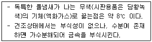
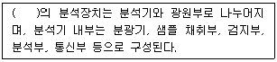
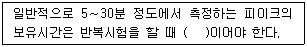
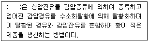
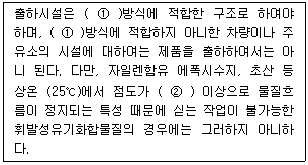
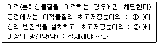

대기환경산업기사 (2011-06-12 기출문제)
1과목: 대기오염개론
1. 바람에 관한 다음 설명 중 옳지 않은 것은?
- 산악지방에서 밤에 정상부근에서부터 불어 내려오는 바람을 산풍이라 한다.
- 지표면으로부터의 마찰효과가 무시될 수 있는 층(1km이상)에서 기압경도력과 전향력이 평형을 이루고 있을 때 부는 수평바람을 지균풍이라 한다.
- 저기압 주변에서 등압선이 곡선을 그릴 때 곡선의 바깥쪽으로 향하는 원심력이 생기고, 이 힘이 코리올리 힘과 합쳐져서 기압경도력과 평형을 이루게 되는데, 이와 같은 힘이 평형을 유지하면서 부는 바람을 경도풍이라 한다.
- 육풍은 해안에서 멀리 떨어진 내륙쪽 8∼15km정도까지 영향을 미치며, 해풍에 비해 풍속이 크고, 수직, 수평적인 영향범위가 넓다.
(정답률: 70%)

2. 다음 중 굴뚝의 통풍력 증가조건으로 가장 거리가 먼 것은?
- 외기주입량이 많을수록
- 굴뚝의 높이가 높을수록
- 굴뚝내의 굴곡이 없을수록
- 배출가스 온도가 높을수록
(정답률: 66%)
3. Panofsky에 의한 리차드슨 수(Richardson number)의 크기와 대기 혼합간의 관계로 옳지 않은 것은?
- R = 0 : 기계적 난류가 존재하지 않는다.
- R ＜ -0.04 : 대류에 의한 혼합이 기계적 혼합을 지배한다.
- 0.25 ＜ R : 수직방향의 혼합은 없다.
- -0.03 ＜ R ＜ 0 : 기계적 난류와 대류가 존재하나 기계적 난류가 주로 혼합을 일으킨다.
(정답률: 74%)
4. 지상 20m에서의 풍속이 3.9m/sec라면 60m에서의 풍속은? (단, Deacon법칙 적용, 대기안정도에 따른 p=0.4)
- 약 4.7m/sec
- 약 5.1m/sec
- 약 5.8m/sec
- 약 6.1m/sec
(정답률: 77%)
5. 다음 중 대기중에서 최고농도가 나타나는 시간이 가장 이른 것은? (단, 하루 중 일변화)
- NO
- NO2
- O3
- PAN
(정답률: 88%)
6. 분산모델의 특성에 관한 설명으로 가장 거리가 먼 것은?
- 지형, 기상학적 정보 없이도 사용 가능하다.
- 점, 선, 면 오염원의 영향을 평가할 수 있다.
- 새로운 오염원이 지역 내에 신설될 때 매번 재평가하여야 한다.
- 오염발생원의 운영 및 방지장치의 설계특성을 평가할 수 있다.
(정답률: 70%)
7. 대기권의 오존층과 관련된 설명으로 가장 거리가 먼 것은?
- 290nm 이하의 단파장인 UV-C는 대기 중의 산소와 오존 분자 등의 가스 성분에 의해 그 대부분이 흡수되어 지표면에 거의 도달하지 않는다.
- 오존의 생성 및 분해반응에 의해 자연상태의 성층권 영역에서는 일정한 수준의 오존량이 평형을 이루고, 다른 대기권 영역에 비해 오존 농도가 높은 오존층이 생긴다.
- 오존농도의 고도분포는 지상 약 35km에서 평균적으로 약 10ppb의 최대농도를 나타낸다.
- 지구전체의 평균 오존량은 약 300Dobson 전후이지만, 지리적으로 또는 계절적으로는 평균치의 ±50% 정도까지 변화한다.
(정답률: 80%)
8. 주어진 온도에서 이론상 최대에너지를 복사하는 가상적인 물체를 흑체라 할 때 흑체복사를 하는 물체에서 방출되는 복사에너지는 절대온도의 4승에 비례한다는 법칙은?
- 비인의 변위법칙
- 플랑크의 법칙
- 알베도의 법칙
- 스테판-볼츠만의 법칙
(정답률: 83%)
9. A사업장 굴뚝에서의 암모니아 배출가스가 30mg/m3로 일정하게 배출되고 있는데, 향후 이 지역 암모니아 배출허용 기준이 20ppm 으로 강화될 예정이다. 방지시설을 설치하여 강화된 배출허용기준치의 70%로 유지하고자 할 때, 이 굴뚝에서 방지시설을 설치하여 저감해야 할 암모니아의 농도는 몇 ppm 인가? (단, 모든 농도조건은 표준상태로 가정)
- 11.5ppm
- 16.8ppm
- 20.8ppm
- 25.5ppm
(정답률: 64%)
10. 25℃,1기압에서 측정한 NO2 농도가 4.76mg/m3 이다. 이 농도를 표준상태의 ppm으로 옳게 환산한 것은?
- 2.24
- 2.53
- 2.72
- 2.98
(정답률: 58%)
11. 대기오염물질의 확산과 관련된 스모그현상과 기온역전에 관한 설명으로 옳지 않은 것은?
- 로스앤젤레스 스모그사건은 광화학스모그에 의한 침강성역전이다.
- 런던스모그 사건은 산화반응에 의한 것으로 습도는 70% 이하조건에서 발생하였다.
- 침강성역전은 고기압권내에서 공기가 하강하여 생기며, 주·야 구분없이 발생할 수 있다.
- 방사성역전은 밤과 아침사이에 지표면이 냉각되어 공기온도가 낮아지기 때문에 발생한다.
(정답률: 87%)
12. 특정물질의 오존 파괴지수를 크기순으로 옳게 배열된 것은?
- C2F3Cl3 ＜ CF2BrCl ＜ CHFClCF3 ＜ CCl4
- CCl4 ＜ CF2BrCl ＜ CHFClCF3 ＜ C2F3Cl3
- CHFClCF3 ＜ C2F3Cl3 ＜ CCl4 ＜ CF2BrCl
- C2F3Cl3 ＜ CCl4 ＜ CF2BrCl ＜ CHFClCF3
(정답률: 60%)
13. 파장 5210Å인 빛 속에서 밀도가 1.25g/cm3이고, 직경 0.3㎛인 기름 방울의 분산면적비가 4일 때 먼지농도가 0.4mg/m3이라면 가시거리(V)는? (단, 가시거리(V)= 5.2pr/KC 를 이용)
- 609m
- 8⑤m
- 1000m
- 1230m
(정답률: 57%)
14. 다음은 어떤 대기오염물질에 대한 설명인가?

- Pb(C2H5)4
- H2S
- HCN
- COCl2
(정답률: 77%)
15. 대기오염과 관련된 설명으로 옳지 않은 것은?
- 환경대기 중 미세먼지는 황산화물과 공존하면 더 큰 피해를 준다.
- 도노라 사건은 포자라카 사건 이후에 발생하였으며 1차 오염물질에 의한 사건이다.
- 카르보닐황은 대류권에서 매우 안정하기 때문에 거의 화학적인 반응을 하지 않고 서서히 성층권으로 유입된다.
- 멕시코의 포자리카 사건은 황화수소의 누출에 의해 발생한 것이다.
(정답률: 79%)
16. 실내공기를 오염시키는 물질에 관한 설명으로 옳지 않은 것은?
- 유기용제(VOC) 중 가장 독성이 강한 것은 스틸렌 ＞ 자일렌 ＞ 톨루엔 ＞ 에틸벤젠 순이다.
- 폼알데하이드는 자극취가 있는 무색의 기체이며, 40% 수용액을 포르말린이라고 한다.
- 라돈은 액화되어도 색을 거의 띄지 않는 물질이며, 화학적으로는 거의 반응을 일으키지 않고 흙 속에서 방사선 붕괴를 일으킨다.
- 석면은 굴절성이 있고, 불연성인 섬유물질로 분리되며 대개 길이와 직경의 비가 크다.
(정답률: 74%)
17. 대기오염물질과 관련배출 업종과의 연결로 가장 거리가 먼 것은?
- 벤젠 - 석유정제, 포르말린제조, 도장공업
- 질소산화물 - 내연기관, 폭약, 비료제조
- 암모니아 - 소오다공업, 화학공업, 농약제조
- 시안화수소 - 가스공업, 화학공업, 제철공업
(정답률: 72%)
18. 다음 중 지표부근 건조대기의 일반적인 부피농도 크기순으로 옳은 것은?
- Ne ＞ CO2 ＞ CO
- CO2 ＞ CO ＞ Ne
- Ne ＞ CO ＞ CO2
- CO2 ＞ Ne ＞ CO
(정답률: 73%)
19. 풍하방향으로 가까이 있는 건물 높이가 60m 라고 할 때, 다운드래프트 현상을 방지하기 위한 굴뚝의 높이는 최소 몇 m 이상 되어야 하는가?
- 60m
- 90m
- 120m
- 150m
(정답률: 79%)
20. 대기권의 특성에 관한 설명으로 옳지 않은 것은?
- 대류권은 고도가 1km 상승함에 따라 온도는 약 6.5℃비율로 감소하므로 대류현상이 일어나기 쉽다.
- 성층권의 오존층에서는 오존의 생성과 소멸이 계속적으로 일어나면서 오존의 농도를 유지하며 또한 지표면의 생물체에 유해한 자외선을 흡수한다.
- 중간권에서는 고도에 따라 온도가 상승하므로 하층부의 밀도가 커서 매우 안정한 상태를 유지한다.
- 열권은 0.1㎛이하의 자외선을 흡수하고, 이 권역은 분자들이 전리상태에 있으므로 전리층이라고도 한다.
(정답률: 69%)
2과목: 대기오염 공정시험 기준(방법)
21. 자동연속측정기에 의한 아황산가스의 불꽃광도측정법에서 시료를 공기 또는 질소로 묽힌 후 수소불꽃 중에 도입하여 발광광도를 측정하여야 하는 파장은?
- 265nm 부근
- 394nm 부근
- 470nm 부근
- 560nm 부근
(정답률: 75%)
22. 다음은 분석장치에 관한 설명이다. ( )안에 알맞은 것은?

- 흡광차분광법
- 원자흡광광도법
- 자외선/가시선 분광법
- ICP분광법
(정답률: 57%)
23. 다음 중 오염물질과 그 측정방법의 연결로 옳지 않은 것은?(오류 신고가 접수된 문제입니다. 반드시 정답과 해설을 확인하시기 바랍니다.)
- 수은 : 디티존법
- 질소산화물 : 페놀디술폰산법
- 브롬화합물 : 질산토륨 - 네오트린법
- 벤젠 : 메틸에틸케톤법
(정답률: 63%)
24. 굴뚝 배출가스 중 황산화물의 침전적정 분석방법에 관한 설명으로 옳지 않은 것은?
- 흡수액으로 과산화수소수(1+9)를 사용하며 이 용액은 어둡고 서늘한 곳에 보관한다.
- N/100초산 바륨용액의 표정 시 종말점은 액의 청색이 1분간 계속되는 점으로 한다.
- 아르세나조Ⅲ 의 분자식은 C12H9As2N4O4S2 이다.
- 아르세나조Ⅲ 지시약은 갈색병에 보관하고 1개월이상 지나면 사용할 수 없다.
(정답률: 67%)
25. 굴뚝 배출가스상 물질의 시료채취를 위한 채취부의 구성 요건으로 옳지 않은 것은?
- 수은 마노미터는 대기와 압력차가 100mmHg 이상인 것을 쓴다.
- 펌프는 배기능력 0.5∼5L/hr인 개방형인 것을 쓴다.
- 펌프를 보호하기 위해서 유리로 만든 가스건조탑을 사용한다.
- 가스미터는 일회전 1L의 습식 또는 건식 가스미터로 온도계와 압력계가 붙어 있는 것을 쓴다.
(정답률: 54%)
26. 굴뚝반경이 3.2m인 원형 굴뚝에서 먼지를 채취하고자 할 때의 측정점수는?
- 8
- 12
- 16
- 20
(정답률: 79%)
27. 굴뚝 배출가스 중 자동측정기에 의한 산소측정법에 관한 설명으로 옳지 않은 것은?
- 자기식방법은 체적자화율이 큰 가스(일산화질소)의 영향을 무시할 수 있는 경우에 적용할 수 있다.
- 자기식인 자기풍방식에는 담벨형과 압력검출형이 있다.
- 전기화학식은 질코니아 방식과 전극방식으로 나눌 수 있다.
- 자동측정기에 의한 방법은 자기식과 전기화학식으로 나눌 수 있다.
(정답률: 75%)
28. 공기를 사용하는 중유 연소 보일러의 굴뚝 배출가스의 유속을 피토우관으로 측정하였더니, 동압이 10mmH2O였다. 이 때 측정점에서의 유속은? (단, 표준상태에서의 배출가스의 밀도는 1.3kg/Sm3, 굴뚝 배출가스 온도는 227℃, 1기압, 정압은 0, 피토우관 계수는 1.0 이다.)
- 5.6m/sec
- 7.5m/sec
- 16.6m/sec
- 19.5m/sec
(정답률: 62%)
29. 가스크로마토그램에서 2개의 접근한 파이크의 분리 정도(피이크 1이 먼저 분리)를 나타내기 위하여 정량적으로 정의한 분리계수와 분리도와의 식으로 옳은 것은? (단, tR1 : 시료도입점으로부터 피이크 1의 최고점까지 길이, tR2 : 시료도입점으로부터 피이크 2의 최고점까지 길이, W1: 피이크 1의 좌우 변곡점에서의 접선이 자르는 바탕선 길이, W2 : 피이크 2의 좌우 변곡점에서의 접선이 자르는 바탕선의 길이)
- 분리계수 = tR1/tR2 분리도 = 2(tR2-tR1)/(W2-W1)
- 분리계수 = tR1/tR2 분리도 = 2(tR2-tR1)/(W1+W2)
- 분리계수 = tR2/tR1 분리도 = 2(tR2-tR1)/(W2-W1)
- 분리계수 = tR2/tR1 분리도 = 2(tR2-tR1)/(W1+W2)
(정답률: 60%)
30. 액의 농도를 (1→5)로 표시한 것으로 가장 적합한 것은?
- 고체 1mg을 용매 5mL에 녹인 농도
- 액체 1g을 용매 5mL에 녹인 농도
- 액체 1용량에 물 5용량을 혼합한 것
- 고체 1g을 용매에 녹여 전량을 5mL로 하는 비율
(정답률: 73%)
31. 흡광광도 장치구성에 관한 설명으로 옳지 않은 것은?
- 일반적인 장치 구성순서는 시료부-광원부-파장선택부-측광부 순이다.
- 단색장치로는 프리즘, 회절격자 또는 이 두가지를 조합시킨 것을 사용하며 단색광을 내기 위하여 슬릿(slit)을 부속시킨다.
- 광전관, 광전자증배관은 주로 자외 내지 가시파장 범위에서, 광전도셀은 근적외 파장범위에서 사용한다.
- 광전분광광도계에는 미분측광, 2파장측광, 시차측광이 가능한 것도 있다.
(정답률: 77%)
32. 아황산가스(SO2) 12.8g을 포함하는 2L용액의 몰농도(M)는?
- 0.01M
- 0.02M
- 0.1M
- 0.2M
(정답률: 65%)
33. 굴뚝 단면이 상·하 동일 단면적인 직사각형 굴뚝의 직경 산출방법으로 옳은 것은? (단, 가로 : 굴뚝내부 단면 가로치수, 세로 : 굴뚝내부 단면 세로치수)
- 환산직경 = {(가로×세로) / (가로+세로)}
- 환산직경 = 2×{(가로×세로) / (가로+세로)}
- 환산직경 = 4×{(가로×세로) / (가로+세로)}
- 환산직경 = 8×{(가로×세로) / (가로+세로)}
(정답률: 80%)
34. 굴뚝 배출가스 중의 페놀류를 가스크로마토그래프법으로 분석하는 방법에 관한 설명으로 옳지 않은 것은?
- 측정범위는 시료 10L를 용매추출 했을 때 시료 중의 페놀류의 농도가 0.01∼0.1V/V ppm 범위의 분석에 적합하다.
- 수산화나트륨 용액(0.4W/V%)을 흡수액으로 포집한다.
- 검출기는 수소염 이온화검출기(FID)가 적합하다.
- 분리관 충전제로는 페놀과 크레졸의 이성체 중 어느 것이든지 분리할 필요가 있을 경우 인산트리크레실 8W/W%와 인산 3W/W% 비율로 규조토에 함침시킨 것을 선택한다.
(정답률: 56%)
35. 시멘트 공장, 석탄 야적장 등 일정한 굴뚝을 거치지 않고 외부로 비산 배출되는 먼지 측정방법에 관한 설명으로 옳지 않은 것은?
- 분석방법의 종류로는 하이볼륨에어샘플러법과 불투명도법이 있다.
- 시료채취 장소는 비산먼지 농도가 가장 높은 것으로 예상되는 1개 지점 이상을 선정한다.
- 시료채취는 1회 1시간 이상 연속채취 한다.
- 대상발생원의 조업이 중단되었을 때는 원칙적으로 시료채취를 하지 않는다.
(정답률: 72%)
36. 이온크로마토그래프법에서 사용되는 검출기의 종류와 가장 거리가 먼 것은?
- 적외선 흡수 검출기
- 가시선 흡수 검출기
- 전기 화학적 검출기
- 전기 전도도 검출기
(정답률: 55%)
37. 다음은 가스크로마토그래프법에서 정성분석을 위한 보유치에 관한 기준이다. ( )안에 알맞은 것은?

- ±5% 오차범위 이내
- ±3% 오차범위 이내
- ±2% 오차범위 이내
- ±1% 오차범위 이내
(정답률: 57%)
38. 휘발성 유기화합물질(VOC)누출확인을 위한 휴대용 측정기기의 규격 및 성능기준으로 옳지 않은 것은?
- 기기의 계기눈금은 최소한 표시된 누출농도의 ±5%를 읽을 수 있어야 한다.
- 기기의 응답시간은 30초보다 작거나 같아야 한다.
- VOC측정기기의 검추기는 시료와 반응하지 않아야 한다.
- 교정 정밀도는 교정용 가스값의 10%보다 작거나 같아야 한다.
(정답률: 73%)
39. 굴뚝 배출가스 중 무기 불소화합물을 용량법으로 분석하여 1.2ppm의 HF 농도를 얻었다. 이 농도를 F 농도(㎍/m3)로 환산하면?
- 1.017㎍/m3
- 1.071㎍/m3
- 1017㎍/m3
- 1071㎍/m3
(정답률: 55%)
40. 굴뚝에서 배출되는 염소가스를 오르토 톨리딘법으로 정량시(흡광도 측정시) 시험온도는?
- 약 0℃
- 약 10℃
- 약 20℃
- 약 50℃
(정답률: 72%)
3과목: 대기오염방지기술
41. 탄소 1kg 연소시 이론적으로 30000kcal의 열이 발생하고, 수소 1kg 연소시 이론적으로 34100kcal의 열이 발생된다면, 에탄 2kg 연소시 이론적으로 발생되는 열량은?
- 30820kcal
- 55600kcal
- 61640kcal
- 74100kcal
(정답률: 57%)
42. A굴뚝 배출가스 중 염소농도가 80mL/Sm3이다. 이 염소농도를 20mg/Sm3로 저하시키기 위하여 제거해야 할 염소농도(mL/Sm3)는?
- 약 44mL/Sm3
- 약 54mL/Sm3
- 약 64mL/Sm3
- 약 74mL/Sm3
(정답률: 53%)
43. 다음 중 일반적으로 착화온도가 가장 높은 것은?
- 메탄
- 수소
- 옥탄
- 중유
(정답률: 64%)
44. 순수한 Propane 500kg을 액화시켜 만든 LPG가 기화될 때 이 기체의 용적은? (단, 표준상태 기준)
- 약 329Sm3
- 약 255Sm3
- 약 2⑤Sm3
- 약 191Sm3
(정답률: 64%)
45. 다음 중 다이옥신의 광분해에 가장 효과적인 파장범위는?
- 150 ∼ 220nm
- 250 ∼ 340nm
- 360 ∼ 540nm
- 600 ∼ 850nm
(정답률: 62%)
46. 연소계산에서 연소 후 배출가스 중 산소농도가 6.2% 라면 완전연소 시 공기비는?
- 1.15
- 1.23
- 1.31
- 1.42
(정답률: 61%)
47. 중량조성이 탄소 85%, 수소15%인 액체연료를 매시 100kg 연소한 후 배출가스를 분석하였더니 분석치가 CO2 12.5%, CO 3%, O2 3.5%, N2 81% 이었다. 이 때 매시간당 필요한 공기량(Sm3/hr)은?
- 약 13
- 약 157
- 약 657
- 약 1271
(정답률: 59%)
48. Venturi Scrubber의 액가스비 범위로 가장 적합한 것은?
- 0.3∼1.5L/m3
- 3.0∼4.5L/m3
- 5.0∼10.0L/m3
- 10.0∼20.0L/m3
(정답률: 74%)
49. 배출가스 중 NOx를 선택적 접촉환원법으로 처리할 때 사용되는 촉매의 종류 중 SO2, SO3, O2와 가장 쉽게 반응하여 황산염을 형성하고, 촉매의 활성이 저하되는 것은?
- Al2O3
- Fe2O3
- TiO2
- Pb2O3
(정답률: 59%)
50. 표준상태에 있는 A 시료의 체적은 61.7Sm3 이다. 25℃, 820mmHg 에서의 체적은 얼마인가?
- 43.6m3
- 51.6m3
- 54.8m3
- 62.4m3
(정답률: 53%)
51. 석회석을 연소로에 주입하여 SO2를 제거하는 건식탈황방법의 특징으로 옳지 않은 것은?
- 연소로내에서 긴 접촉시간과 아황산가스가 석회분말의 표면안으로 쉽게 침투되므로 아황산가스의 제거효율이 비교적 높다.
- 석회석과 배출가스 중 재가 반응하여 연소로내에 달라붙어 열전달을 낮춘다.
- 연소로내에서의 화학반응은 주로 소성, 흡수, 산화의 3가지로 나눌 수 있다.
- 석회석을 재생하여 쓸 필요가 없어 부대시설이 거의 필요없다.
(정답률: 53%)
52. 중력집진장치에 관한 설명으로 옳지 않은 것은?
- 침강실의 높이가 낮고 길이가 길수록 집진율은 높아진다.
- 침강실의 입구폭이 클수록 유속이 느려지며 미세한 입자가 포집된다.
- 침강실 내의 처리가스 속도가 작을수록 미립자가 포집된다.
- 침강실이 다단일 경우 단수가 증가될수록 집진효율은 감소하나 압력손실은 작아진다.
(정답률: 54%)
53. 세정집진장치의 입자 포집원리에 관한 설명으로 옳지 않은 것은?
- 액적에 입자가 충돌하여 부착한다.
- 미립자의 확산에 의하여 액적과의 접촉을 쉽게 한다.
- 입자를 핵으로 한 증기의 응결에 따라 응집성을 감소시킨다.
- 배기증습에 의하여 입자가 서로 응집한다.
(정답률: 66%)
54. 배연탈황법 중 V2O5, K2SO4 등을 사용하여 배기 중의 아황산가스를 진한 황산으로 회수할 수 있는 방법은?
- 흡착법
- 알칼리법
- 접촉산화법
- 환원법
(정답률: 57%)
55. 탈취방법별 특징으로 옳지 않은 것은?
- BALL 차단법: 밀폐형 구조물을 설치할 필요가 없고 크기와 색상이 다양하며, 미관이 수려한 편이다.
- 염소주입법: 페놀이 다량 함유될 경우 클로로페놀을 형성하여 2차 오염문제를 발생시킨다.
- 약액세정법: 산성 또는 염기성 가스를 별도 처리할 필요가 없고, 조작이 어려우며, 일부 악취물질에만 적용이 가능하다.
- 액상촉매법: 악취가스의 완전분해가 가능하므로 2차 오염처리대책이 거의 불필요하며, 촉매의 수명이 길다.
(정답률: 58%)
56. 사이클론의 직경이 56cm, 유입가스의 속도가 5.5m/sec 일 경우 분리계수는?
- 5.5
- 11
- 23
- 46
(정답률: 59%)
57. 세정집진장치에 관한 설명으로 옳지 않은 것은?
- 로타형, 가스 분수형 등은 유수식에 속하며, 유수식은 보유액을 순환시키기 때문에 보충액량이 적은 것이 특징이다.
- 충전탑, 분무탑은 가압수식에 해당한다.
- 벤츄리스크러버에서 물방울 입경과 먼지 입경의 비는 5:1 정도가 좋다.
- 타이젠와셔는 회전식에 해당한다.
(정답률: 59%)
58. 다음은 중질유의 탈황방법이다. ( )안에 가장 적합한 것은?

- 직접탈황법
- 간접탈황법
- 중간탈황법
- 다단탈황법
(정답률: 67%)
59. 다음 기체연료 중 발열량(kcal/Sm3)이 가장 높은 것은?
- 메탄가스
- 프로판가스
- 고로가스
- 수소
(정답률: 64%)
60. 전기집진장치에서 2차 전류가 주기적으로 변하거나 불규칙적으로 흐르는 장애현상이 발생할 때의 대책으로 가장 거리가 먼 것은?
- 충분하게 분진을 탈리시킨다.
- 조습용 스프레이의 수량을 늘린다.
- 방전극과 집진극을 점검한다.
- 1차 전압을 스파크가 안정되고 전류의 흐름이 안정될 때까지 낮추어 준다.
(정답률: 62%)
4과목: 대기환경 관계 법규
61. 대기환경보전법상 연소할 때에 생기는 유리(遊離) 탄소가 응결하여 입자의 지름이 1미크론 이상이 되는 입자상물질로 정의되는 것은?
- 검댕
- 매연
- 먼지
- 가스
(정답률: 69%)
62. 다음은 대기환경보전법규상 휘발성유기화합물 배출 억제·방지시설 설치 등에 관한 기준 중 석유정제 및 석유화학제품 제조업의 기준이다. ( )안에 알맞은 것은?

- ①상부적하(Top Loading), ②2000 Centipoise
- ①상부적하(Top Loading), ②10000 Centipoise
- ①하부적하(Bottom Loading), ②2000 Centipoise
- ①하부적하(Bottom Loading), ②10000 Centipoise
(정답률: 44%)
63. 대기환경보전법규상 측정기기의 부착·운영 등과 관련된 행정처분기준 중 교정가스 또는 교정액의 표준값을 거짓으로 입력하거나 부적절한 교정가스 또는 교정액을 사용한 경우 위반차수별(1차∼4차) 행정처분기준으로 옳은 것은?
- 경고-조업정지10일-조업정지30일- 허가취소 또는 폐쇄
- 경고-조업정지10일-조업정지15일-조업정지30일
- 경고-경고-조업정지5일-조업정지10일
- 경고-조치명령-허가취소-폐쇄
(정답률: 66%)
64. 대기환경보전법규상 대기오염방지시설에 해당하지 않는 것은? (단, 기타사항은 제외)
- 미생물을 이용한 처리시설
- 응축에 의한 시설
- 흡착에 의한 시설
- 전기투석에 의한 시설
(정답률: 64%)
65. 대기환경보전법상 온실가스와 가장 거리가 먼 것은?
- 아산화질소
- 수소불화탄소
- 사불화탄소
- 육불화황
(정답률: 54%)
66. 대기환경보전법령상 휘발성 유기화합물의 규제를 위해 휘발성 유기화합물 배출시설 설치신고를 해야 하는 “대통령령으로 정하는 시설” 과 가장 거리가 먼 것은? (단, 기타사항은 제외)
- 저유소의 저장시설 및 출하시설
- 폐수처리시설
- 세탁시설
- 석유정제를 위한 제조시설
(정답률: 51%)
67. 대기환경보전법규상 수도권대기환경청장, 국립환경과학원장 또는 한국환경공단이 설치하는 대기오염 측정망의 종류에 해당하지 않는 것은?
- 도시지역 또는 산업단지 인근지역의 특정대기유해물질(중금속을 제외한다)의 오염도를 측정하기 위한 유해 대기물질측정망
- 산성 대기오염물질의 건성 및 습성 침착량을 측정하기 위한 산성강하물측정망
- 기후·생태계변화 유발물질의 농도를 측정하기 위한 지구대기측정망
- 도시의 시정장애의 정도를 파악하기 위한 시정거리측정망
(정답률: 39%)
68. 대기환경보전법규상 규모에 따른 자동차의 분류기준으로 옳지 않은 것은? (단, 2009년 1월 1일 이후)
- 경자동차 : 엔진배기량이 1,000cc 미만
- 소형 승용자동차 : 엔진배기량이 1,000cc 이상이고, 차량 총중량이 3.5톤 미만이며, 승차인원이 8명 이하
- 이륜자동차 : 공차 중량이 1톤 미만
- 초대형 화물자동차 : 차량 총중량이 15톤 이상
(정답률: 54%)
69. 대기환경보전법령상 부과금 납부자가 천재지변으로 재산에 중대한 손실이 발생하여 부과금을 납부할 수 없다고 인정될 때 ①초과부과금의 징수유예의 기간과 ②그 기간 중의 분할납부의 횟수기준으로 옳은 것은?
- ① 유예한 날의 다음날부터 2년 이내, ② 12회 이내
- ① 유예한 날의 다음날부터 2년 이내, ② 6회 이내
- ① 유예한 날의 다음날부터 1년 이내, ② 12회 이내
- ① 유예한 날의 다음날부터 1년 이내, ② 6회 이내
(정답률: 72%)
70. 대기환경보전법령상 초과부과금의 부과대상이 되는 오염물질로만 옳게 나열된 것은?
- 암모니아, 이산화탄소, 오존
- 황화수소, 구리화합물, 망간
- 구리화합물, 염소, 염화수소
- 불소화합물, 이황화탄소, 시안화수소
(정답률: 69%)
71. 다중이용시설 등의 실내공기질 관리법규상 PM10의 실내공기질 유지기준이 100㎍/m3 이하인 다중이용시설에 해당하는 것은?
- 실내주차장
- 대규모 점포
- 산후조리원
- 지하역사
(정답률: 50%)
72. 다음은 대기환경보전법규상 비산먼지 발생을 억제하기 위한 시설의 설치 및 필요한 조치에 관한 기준이다. ( )안에 알맞은 것은?

- ① 1/3, ② 1
- ① 1/3, ② 1.25
- ① 1/4, ② 1
- ① 1/4, ② 1.25
(정답률: 62%)
73. 대기환경보전법규상 특정대기유해물질에 해당하지 않는 것은?
- 시안화수소
- 석면
- 다이옥신
- 메르캅탄류
(정답률: 56%)
74. 대기환경보전법규상 배출시설의 설치허가 및 신고, 대기오염물질 배출상황 검사, 배출시설에 대한 업무처리현황의 위임업무 보고횟수 기준으로 옳은 것은?
- 수시
- 연 1회
- 연 2회
- 연 4회
(정답률: 49%)
75. 환경정책기본법령상 일산화탄소의 대기환경 기준으로 옳은 것은?
- 1시간평균치 25ppm 이하
- 8시간평균치 25ppm 이하
- 24시간평균치 9ppm 이하
- 연간평균치 9ppm 이하
(정답률: 49%)
76. 악취방지법규상 위임업무 보고사항 중 악취검사기관의 지정, 지정사항 변경보고 접수 실적의 보고횟수 기준은?
- 수시
- 연 1회
- 연 2회
- 연 4회
(정답률: 42%)
77. 대기환경보전법상 100만원 이하의 과태료 부과대상인자는?
- 황함유기준을 초과하는 연료를 공급·판매하거나 사용한 자
- 비산먼지의 발생억제시설의 설치 및 필요한 조치를 하지 아니하고 시멘트·석탄·토사 등 분체상 물질을 운송한 자
- 배출시설 등 운영상황에 관한 기록을 보존하지 아니한 자
- 자동차의 원동기 가동제한을 위반한 자동차의 운전자
(정답률: 62%)
78. 대기환경보전법규상 환경기술인의 준수사항으로 가장 거리가 먼 것은?
- 배출시설 및 방지시설을 정상가동하여 대기오염물질 등의 배출이 배출허용기준에 맞도록 할 것
- 배출시설 및 방지시설의 운영에 관한 업무일지를 사실에 기초하여 작성할 것
- 자가측정한 결과를 사실대로 기록할 것
- 대기환경관련 학회 및 세미나에 적극 참석할 것
(정답률: 61%)
79. 환경정책기본법령상 각 항목에 대한 대기환경기준으로 옳은 것은?
- 아황산가스의 연간 평균치: 0.03ppm 이하
- 아황산가스의 1시간 평균치: 0.15ppm 이하
- 미세먼지(PM-10)의 연간 평균치: 100㎍/m3 이하
- 오존(O3)의 8시간 평균치: 0.1ppm 이하
(정답률: 67%)
80. 대기환경보전법규상 자동차 연료·첨가제 또는 촉매제의 검사를 받으려는 자는 자동차의 연료·첨가제 또는 촉매제 검사신청서에 시료 및 서류를 첨부하여 국립환경과학원장 등에게 제출해야 하는데, 다음 중 제출해야 할 시료 또는 서류로 가장 거리가 먼 것은?
- 검사용 시료
- 검사시료의 화학물질 조성비율을 확인할 수 있는 성분 분석서
- 제품의 공정도(촉매제만 해당한다)
- 최소첨가비율을 확인할 수 있는 자료(촉매제만 해당한다)
(정답률: 51%)